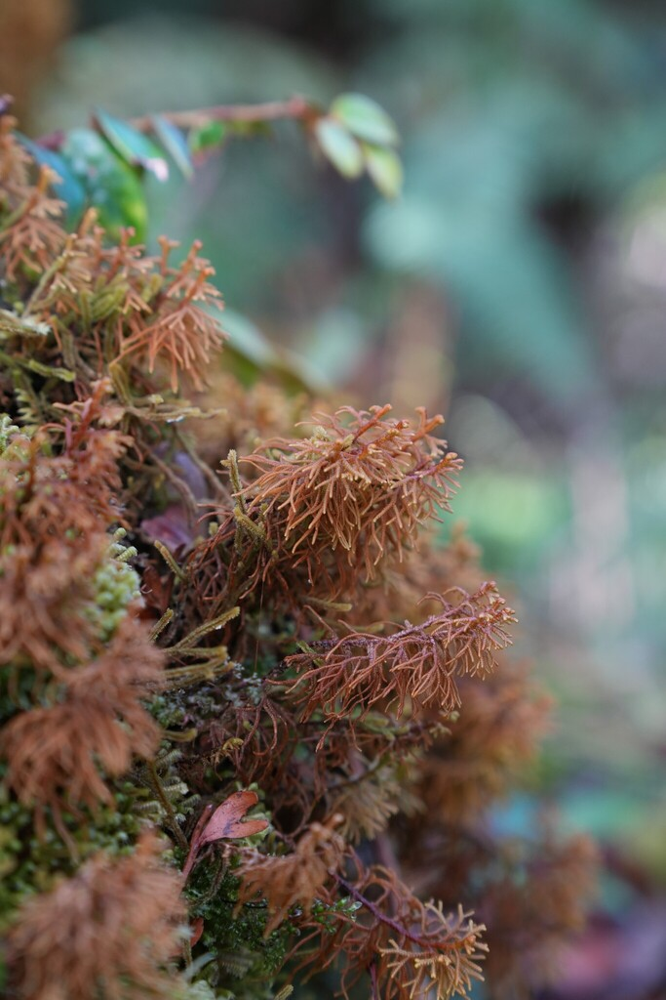

Mastigophoraceae
Mastigophora / Whip-bearing Liverwort Family
Mastigophoraceae is a family of robust leafy liverworts containing the single genus Mastigophora. These plants are characterized by their large size, often dark pigmentation, complex branching patterns that include distinctive whip-like flagelliform branches (stolons), incubous leaves, and large, divided underleaves. They typically inhabit cool, humid, oceanic or montane environments.
Overview
The Mastigophoraceae family, comprising solely the genus Mastigophora, includes some of the most robust and structurally complex leafy liverworts. Often forming extensive, dense mats or turfs in cool, humid climates, these plants are immediately recognizable by their large size, often dark coloration (brown, reddish, purplish-black), and intricate branching. A defining feature is the presence of specialized, long, slender, whip-like branches, known as flagelliform stolons, which typically arise from the ventral side of the stem and likely aid in anchorage or vegetative spread.
Mastigophoraceae exhibits a fascinating, disjunct global distribution, occurring in specific oceanic and montane regions across both hemispheres, hinting at an ancient origin and a history shaped by continental drift (Gondwanan connections). They are typically found on damp rocks, cliffs, peaty banks, or occasionally as epiphytes in high-humidity environments like cloud forests, subalpine heathlands, and coastal fog zones.
Phylogenetically, Mastigophoraceae is placed in its own suborder, Mastigophorineae, within the Jungermanniales (though sometimes debated), signifying its unique evolutionary status. The combination of robust habit, incubous leaves, large divided underleaves, complex branching with flagellae, and thick-walled cells makes this family a distinct and intriguing group within the liverworts.
Quick Facts
- Scientific Name: Mastigophoraceae
- Common Name: Mastigophora / Whip-bearing Liverwort Family
- Number of Genera: 1 (Mastigophora)
- Number of Species: Approximately 4-5
- Distribution: Disjunct in oceanic and montane regions (Europe, Macaronesia, Himalayas, SE Asia, Australasia, Pacific, Americas)
- Evolutionary Group: Liverworts (Marchantiophyta) - Jungermanniopsida - Mastigophorineae
Key Characteristics
Gametophyte Form and Habit
Plants are large, robust, and often rigid, forming extensive, dense mats, cushions, or turfs. Color is typically dark: olive-green, brown, reddish-brown, purplish-black. Stems are thick, creeping to ascending or erect, displaying complex branching patterns. A key feature is the presence of long, slender, microphyllous (bearing tiny scale-like leaves) or leafless flagelliform branches or stolons, usually arising ventrally (ventral-intercalary origin). Normal leafy branches are typically lateral (Frullania-type).
Leaves and Underleaves
Leaves are arranged incubously (overlapping like shingles, upper edge of lower leaf covered by leaf above). They are typically broad, often asymmetric, ovate to oblong, and usually divided apically into 3-4 short lobes or teeth, although sometimes they can appear almost entire with just apical points. Underleaves are large and conspicuous, roughly half the size of the leaves or larger, and deeply divided into 2-4 (often 4) lanceolate lobes, which may themselves be toothed or lobed.
Rhizoids
Rhizoids are generally sparse, often pigmented, and typically arise from the base of the underleaves.
Cellular Structure
Cells are characteristically strongly thick-walled, with large, often bulging and confluent (merging) trigones, making the cell lumens appear rounded or star-shaped. Cell walls are often pigmented brown or red.
Reproductive Structures
Plants are consistently dioicous.
- Antheridia are borne in the axils of saccate (pouched) bracts, forming intercalary spikes on stems or branches.
- Archegonia are typically terminal on short ventral branches originating near the base of normal lateral branches. They are surrounded by protective bracts.
- A large, conspicuous perianth develops after fertilization. It is typically ovate to fusiform, inflated, and strongly plicate (pleated) towards the contracted mouth. Marsupia are absent.
Sporophytes are very rarely observed or collected in this family.
Sporophytes and Spores
When produced, the sporophyte develops within the perianth and consists of a foot, seta, and capsule. Details are limited due to the rarity of fertile material, but the capsule is expected to be ovoid with a multi-layered wall, dehiscing to release spores and elaters.
Field Identification
Identifying Mastigophoraceae involves recognizing its robust size, dark color, complex branching including flagellae, and specific habitat preferences.
Primary Identification Features
- Habit: Large, robust, rigid plants forming dense mats/turfs, often darkly pigmented (brown, reddish, purplish-black).
- Branching: Complex branching including distinctive, long, slender, whip-like flagelliform branches/stolons (often ventral).
- Leaves: Clearly incubous arrangement, broad, typically with 3-4 short apical lobes/teeth.
- Underleaves: Large, conspicuous, deeply divided into 2-4 lobes.
- Habitat: Cool, humid, oceanic or montane environments (rocks, cliffs, peat, sometimes epiphytic).
- Cell Walls (Microscopic): Strongly thickened with large, confluent trigones.
Secondary Identification Features
- Texture: Plants often feel stiff and wiry.
- Branch Symmetry: Main leafy shoots are dorsiventral, but overall branching pattern is complex.
- Perianth: If found, large, inflated, pleated perianths on short ventral branches are diagnostic.
Seasonal Identification Tips
Mastigophoraceae gametophytes are perennial and identifiable year-round:
- Year-Round: The robust habit, branching pattern (including flagellae), leaf arrangement, and underleaf structure are constant features.
- Moisture: Plants are most characteristic when hydrated; flagellae may be more apparent.
- Reproductive Rarity: Finding reproductive structures (perianths, androecia) is uncommon; identification relies primarily on vegetative features.
Common Confusion Points
The combination of robust habit, flagellae, incubous leaves, and large divided underleaves is quite distinctive, but confusion might arise with:
- Herbertaceae (Herbertus): Also robust and often darkly pigmented with thick-walled cells and divided underleaves. However, Herbertus has deeply 3-lobed leaves (not just apical lobes/teeth), lacks flagelliform branches, and often appears more radially symmetrical.
- Lepidolaenaceae: Some genera are robust with complex branching and incubous leaves, but typically differ in leaf lobing (often with a distinct ventral lobule) and underleaf structure. May have different types of specialized branches.
- Some robust Lepidoziaceae or Neogrolleiaceae: Might have complex branching or stolons but differ significantly in leaf insertion (often transverse or succubous), leaf shape (often deeply divided into segments), and cell structure (usually less extremely thick-walled).
- Porellaceae/Frullaniaceae: Have incubous leaves but possess complicate-bilobed leaves (large dorsal lobe, small ventral lobule) and different underleaf shapes; lack flagelliform branches of the Mastigophora type.
Field Guide Quick Reference
Look For:
- Large, robust, often dark plants
- Complex branching with flagelliform stolons
- Incubous leaves
- Leaves with 3-4 apical lobes/teeth
- Large, deeply divided underleaves (2-4 lobes)
- Thick-walled cells (stiff texture)
- Humid oceanic/montane habitats
Key Distinctions:
- Presence of flagelliform branches
- Incubous leaves (vs. succubous/transverse)
- Apical leaf lobes/teeth (vs. deeply divided leaves in Herbertus/Lepicolea)
- Large divided underleaves (vs. small/absent/entire)
- Absence of marsupium
Notable Examples
The family contains only the genus Mastigophora:

Mastigophora woodsii
Wood's Whipwort
A classic example found along the Atlantic fringe of Europe (Scotland, Ireland, Norway) and Macaronesia. Forms large, dense, often reddish-brown to purplish-black cushions on damp rocks and peat in exposed, humid locations. Clearly shows the flagelliform branches, incubous 3-4 toothed leaves, and large 4-lobed underleaves.

Mastigophora diclados
(No common name)
A widespread species found in tropical montane regions across Asia, Australasia, and the Pacific. Often epiphytic or grows on logs and rocks in cloud forests. Similar robust habit and branching complexity, showcasing the family's presence in tropical high-elevation ecosystems.
Phylogeny and Classification
Mastigophoraceae holds a distinct phylogenetic position within the liverwort division Marchantiophyta, class Jungermanniopsida. It is placed in its own suborder, Mastigophorineae, within the order Jungermanniales (though its placement has sometimes been debated, with occasional links suggested to Porellales). This classification underscores its unique suite of morphological characteristics, particularly the complex branching involving flagelliform stolons, incubous leaves, large divided underleaves, and specific cellular features.
The Mastigophorineae represents a relatively isolated lineage, likely ancient, whose exact relationships to other major suborders within Jungermanniales (like Herbertineae, Lepidolaenineae, or Porellineae) are still being fully resolved through ongoing molecular phylogenetic studies. Its striking morphology and disjunct distribution make it a key group for understanding liverwort evolution and biogeography.
Position in Plant Phylogeny
- Kingdom: Plantae
- Clade: Embryophytes (Land Plants)
- Division: Marchantiophyta (Liverworts)
- Class: Jungermanniopsida
- Order: Jungermanniales
- Suborder: Mastigophorineae
- Family: Mastigophoraceae
Evolutionary Significance
Mastigophoraceae is significant for:
- Specialized Branching: The development of prominent flagelliform stolons represents a notable morphological adaptation, likely for anchorage and potentially vegetative spread.
- Phylogenetic Isolation: Its position in the monotypic suborder Mastigophorineae highlights it as a distinct evolutionary lineage within leafy liverworts.
- Biogeography: The highly disjunct, often oceanic/montane distribution pattern is indicative of an ancient lineage with a history potentially linked to Gondwanan breakup and long-distance dispersal or survival in refugia.
- Adaptation to Environment: Its robust structure and thick-walled cells suggest adaptations to cool, humid, and potentially exposed conditions.